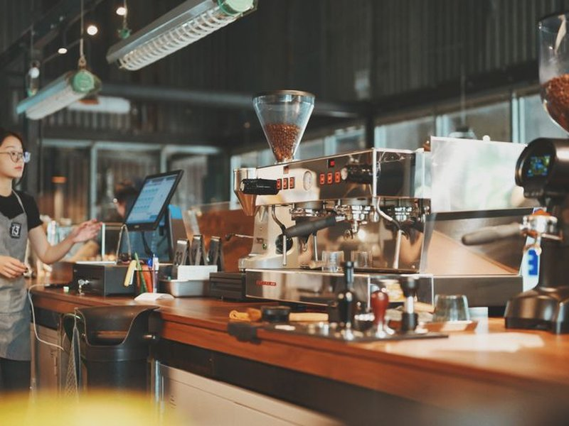
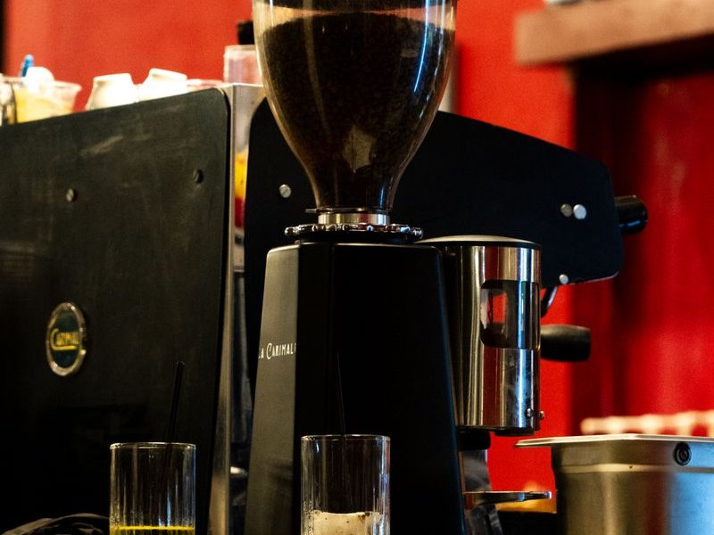
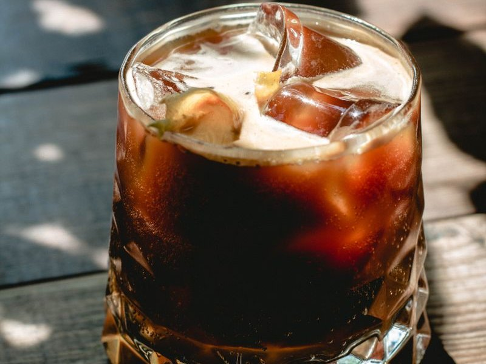
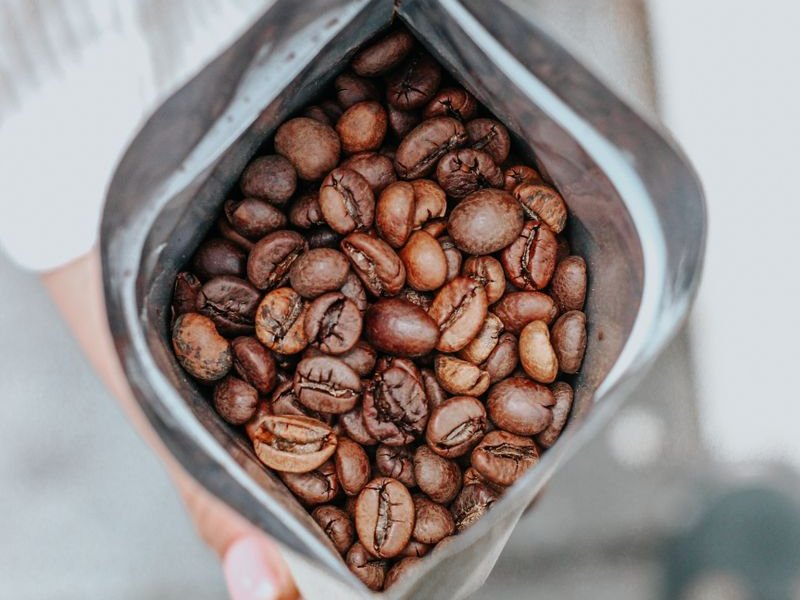
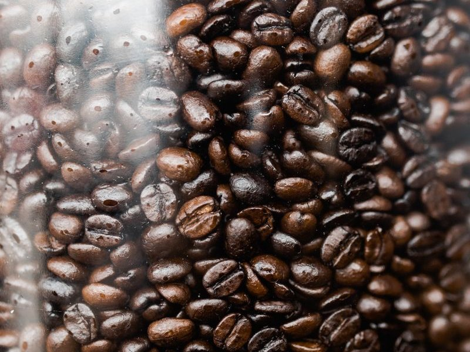
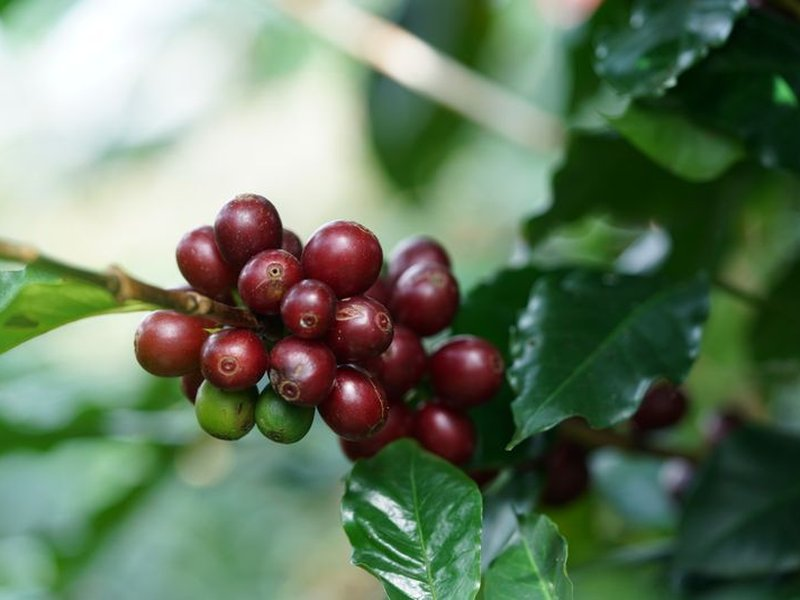

Nossa loja
A Moka é uma cafeteria de Curitiba. Servimos café, bebidas geladas e produtos de padaria, no balcão da loja e por delivery.
Também vendemos café em grãos para levar para casa. A entrega é feita em alguns bairros da cidade, e você também pode retirar o pedido na loja.
Horário de funcionamento
- Segunda a sexta: 7h às 21h
- Sábados e domingos: 8h às 20h
- Endereço: Rua XV de Novembro, 1000 - Centro, Curitiba - PR
Vídeo da loja
Música ambiente
Galeria







